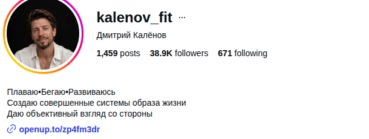
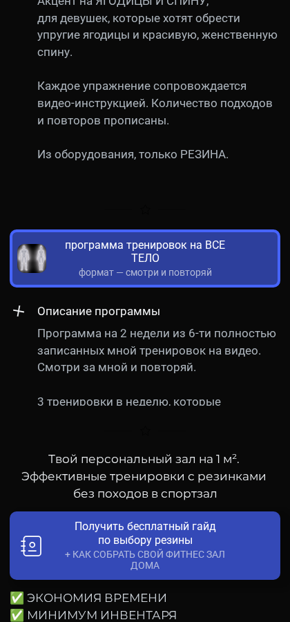

Страница собрана под вопросы, с которыми Дмитрий пришёл 15 сентября: два голосовых и переписка, расшифрованы целиком. К ним добавлены аккаунт в Instagram и воронка, пройденная по ссылке из шапки. Всё, что здесь написано, взято оттуда. Если данных нет, так и сказано.
instagram @kalenov_fit, 24.09.2026
пять вопросов из голосовых, в формулировках Дмитрия
Фразы «похудеем вас» звучат одинаково у всех, потому что за ними нет ни человека, ни ситуации, ни способа. Когда блогер меняет одну шаблонную фразу на другую, серая масса никуда не девается. Она уходит, когда в тексте появляются три вещи, которых нет у соседа.
Возраст, работа, что уже пробовал, почему бросил. Такого человека нельзя назвать заранее, его можно только найти в разговорах с клиентами (об этом вопрос 05). Сарафан приводит людей до сих пор, значит, этот человек уже есть среди клиентов наставничества.
У Дмитрия он уже есть: «Старт» строит питание через принцип тарелки. Это инструмент, который можно показать на реальной тарелке, а не пообещать. Шаблон звучит «похудеем». Конкретика звучит так: «вот тарелка, вот как её собрать за две минуты».
Дмитрий сам выступает: 24.09, в день консультации, у него соревнования. Подготовка, питание перед стартом, что не получилось, — такого у соседа по ленте нет по определению, потому что это его собственная жизнь.

«Плаваю · Бегаю · Развиваюсь. Создаю совершенные системы образа жизни. Даю объективный взгляд со стороны». Из этих трёх строк нельзя понять, что Дмитрий тренер, что он ведёт по питанию и что к нему можно прийти. Серая масса хотя бы пишет «похудеем». Эта шапка не говорит даже этого.
Ролик без слов с упражнением понятен и в Киргизии, и в Бразилии. Именно поэтому он и собрал интернациональную аудиторию. Но такой ролик ничего не говорит о Дмитрии: ни кто он, ни что продаёт, ни почему к нему стоит идти за питанием. Зритель получил упражнение, а купить у автора ему нечего.
Воронка, как её описал Дмитрий:
| ступень | что там | что известно |
|---|---|---|
| 1. Контент | упражнения с резиной, прогревы в сторис и постах | аудитория набрана, во многом не русскоязычная |
| 2. Программа тренировок | 4 недели для мужчин / для женщин, 2 недели с 6 записанными тренировками, «смотри и повторяй» | 700–900 ₽; «неплохо продавались», до ~30 000 ₽/мес |
| 3. Закрытый чат | догрев, материалы по питанию | конверсия дальше — ноль |
| 4. «Старт» | 2 недели рационального питания, принцип тарелки; старт 21-го | новых заявок ноль; две старые и одна новая, и та не из резинки |
| 5. Проект / наставничество | питание + тренировочный план | приходят по сарафану, из воронки — нет |

Дмитрий сам назвал два канала, которые работают: сарафан и консультации. Оба держатся на доверии к нему лично, а не на ленте. То, что консультации продают все, значит одно: консультацию «по питанию» больше нельзя продать как услугу. Её можно продать как результат конкретного человека.
Андрей ответил на это 15.09 одной фразой: «это надо обязательно делать, знаю, что напряг, но ты офигеешь от результата». На вопросы 01–04 нельзя ответить окончательно, пока не известно, кто покупает и почему. Ответ лежит у тех, кто уже заплатил, и у тех, кто дошёл до чата и ушёл.
Пять человек, которые купили наставничество или консультацию. Пять человек, которые купили программу за 700–900 ₽ или сидят в закрытом чате, но дальше не пошли. Лучше созвон на 15 минут, можно голосовыми.
1. Что происходило в жизни, когда решил(а) что-то менять? 2. Что пробовал(а) до меня и почему бросил(а)? 3. Почему выбрал(а) меня, а не другого тренера? 4. Что изменилось после? 5. Как бы ты рассказал(а) обо мне подруге или другу? Непокупателям третий вопрос меняется на «что остановило».
Ответы на пятый вопрос — это готовые формулировки для шапки, для роликов и для оффера консультации. Это и есть выход из серой массы (вопрос 01): не придумывать отличие, а услышать его от своих клиентов.
Эта неделя
Следующие две недели